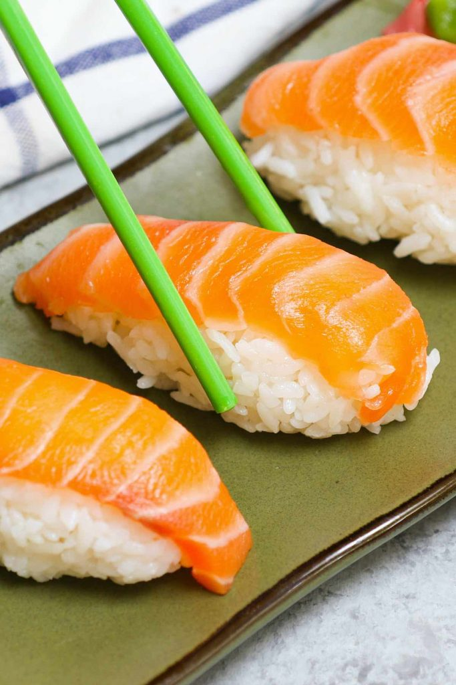

Chef Pengin's Salmon Nigiri Recipe

Description
henlo hoomans! its chef pengin back with one of his fastest recipes involving pengin's favourite ingredient, SALMON ^^
today, he brings you the recipe for the delactable salmon sashimi sushi that chef pengin likes very much!
and he's going to teach you how to make it ehe
Ingredients
For Salmon Nigiri
- 5oz of Salmon (Sashimi-Grade, A++ Pengin Award)
For Sushi Rice
- 1 cup Sushi Rice (uncooked)
- 1 cup Water
Steps
- Make the Sushi Rice
- Cut the Salmon
- Shape the Rice
- Assemble Salmon Nigiri
- Eat Salmon
- Receive Cuddles from Hoomans
- Back to Sleep!